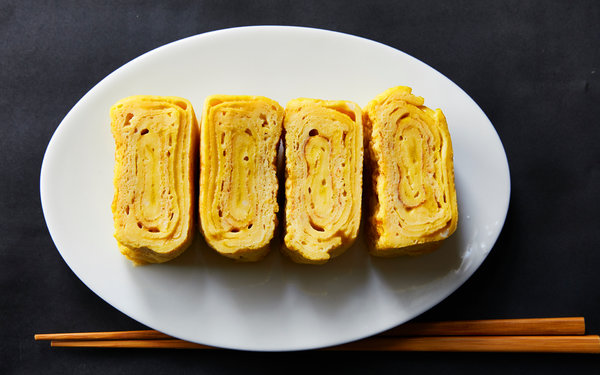
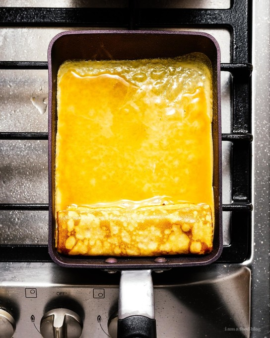

Tamagoyaki

Description
Tamagoyaki is a Japanese rolled omelet, made by rolling thin
layers of beaten eggs. A little salty, a little sweet - tamagoyaki
is the perfect balance of flavor. It is often served as a side dish
in traditional Japanese breakfasts, along with grilled fish, rice,
miso soup, and pickles. It is also a common recipe to use in bento.
My recipe for tamagoyaki is designed to be as simple as possible.
It can also be scaled to your preference very easily. I only use
three ingredients: mirrin, white soy sauce, and eggs. If you can't
find white soy sauce, normal low sodium soy sauce will work just fine.
For the best flavors, I try to get the best/freshest ingredients
possible, but whatever you have on hand will do.
Equipment
- Egg pan or Tamagoyaki pan
- Chopsticks or Spatula (for rolling your tamagoyaki)
- Small mixing bowl, preferably with a pour spout (I use a liquid
measuring cup)
Ingredients
- 3 Large Eggs
- 1 Tbs Mirin
- 1 Tbs White Soy Sauce
- 2 Tbs Oil (for oiling your pan)
Steps

-
Beat your eggs in a mixing bowl. Try to incorporate as little
air as you can. Chopsticks are great for this.
- Combine the mirin, soy sauce, and eggs.
- Heat your pan on medium heat.
-
Once your pan is hot, oil it. Use a folded up paper towl to
rub oil on the whole inside surface.
-
Now pour a thin layer of egg. Let it cook until the bottom is
set, but the top is still a little gooey.
-
Roll the sheet toward you from the end of the pan. It's okay if
the first few rolls aren't perfect. They'll be covered up as you
continue.
-
Oil the parts of the pan you can see, then pull your tamagoyaki
to the side of the pan nearest you and oil the part of the pan that
was under it.
-
Continue pouring and rolling until you are out of eggs. Lift up
your tamagoyaki to allow the new egg mixture to attach to your roll.
-
Place your finished tamagoyaki onto a cutting board to cool for
a couple of minutes, then slice into four equal peices.
-
Plate your tamagoyaki and serve with rice and, if desired,
shredded daikon radish. Enjoy!